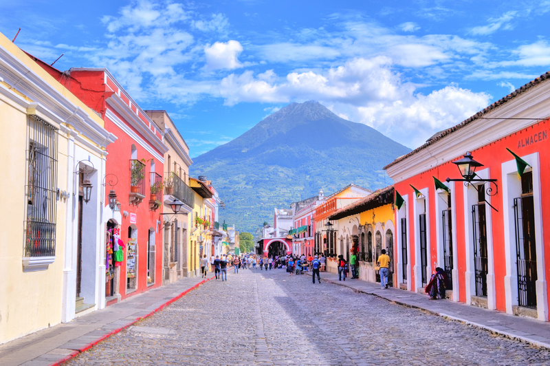
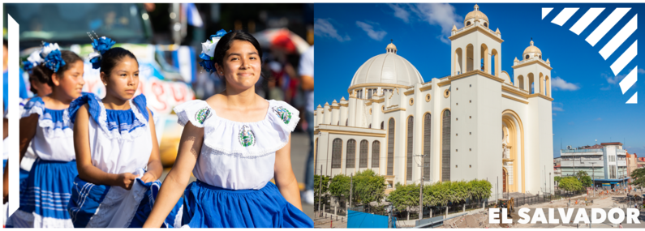
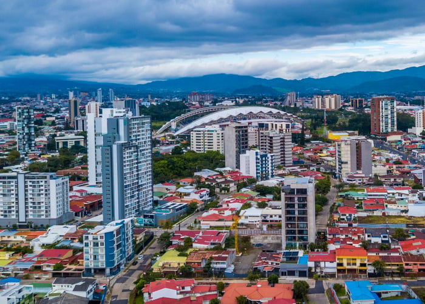
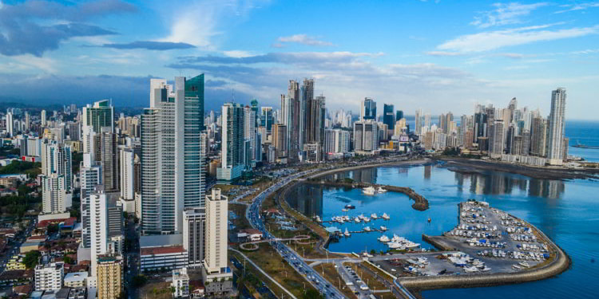
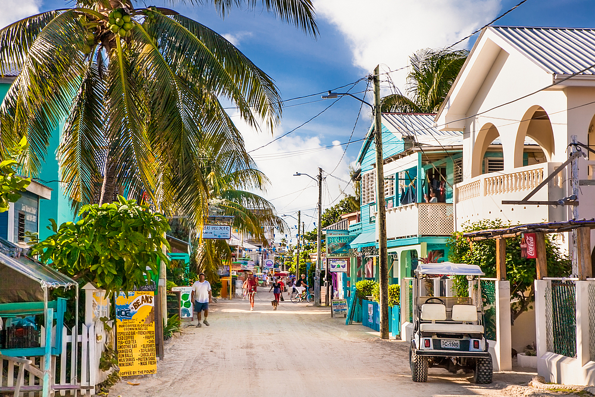
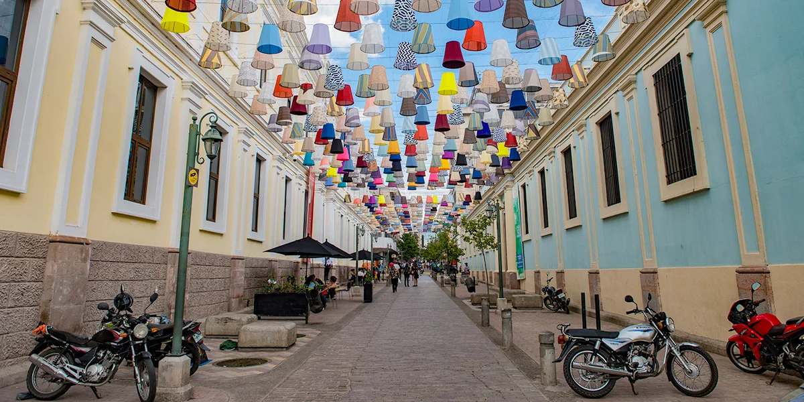
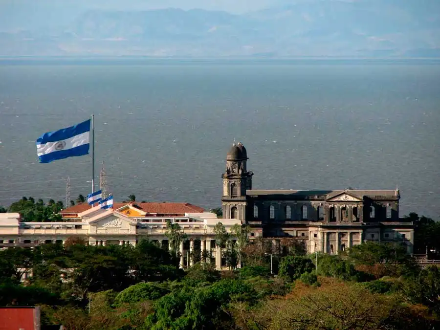

Guatemala

Guatemala, el corazón del mundo maya, es un país de contrastes donde se mezcla la historia precolombina con la modernidad. Sus impresionantes volcanes, lagos cristalinos y bosques nubosos ofrecen una experiencia única a los visitantes. Antigua Guatemala, una ciudad colonial con calles empedradas y edificios históricos, es uno de los destinos más populares. Además, el Lago de Atitlán, rodeado por montañas y pueblos indígenas, es considerado uno de los lagos más bellos del mundo.
Más sobre Guatemala
El Salvador

El Salvador, el país más pequeño de Centroamérica, ofrece una mezcla perfecta de montañas, playas y cultura. Aunque es pequeño en tamaño, su variedad geográfica es impresionante. Desde las olas perfectas para surfistas en playas como El Tunco, hasta las rutas de montaña como la Ruta de las Flores, donde se pueden visitar pueblos pintorescos y disfrutar de la gastronomía local. La capital, San Salvador, combina lo moderno con lo tradicional, ofreciendo tanto rascacielos como mercados locales vibrantes.
Más sobre El Salvador
Costa Rica

Costa Rica es conocida mundialmente por su enfoque en la sostenibilidad y la protección del medio ambiente. Este país sin ejército desde 1949, dedica gran parte de sus recursos a la conservación de la naturaleza. Es el hogar de más del 5% de la biodiversidad mundial, con parques nacionales que albergan una vasta variedad de flora y fauna. Los turistas disfrutan de actividades como el senderismo en la selva tropical, el avistamiento de aves, y la visita a las playas del Caribe y del Pacífico.
Más sobre Costa Rica
Panamá

Panamá es famoso por su canal, una de las obras de ingeniería más importantes del mundo, que conecta los océanos Atlántico y Pacífico. Pero más allá del canal, Panamá ofrece una mezcla fascinante de modernidad y tradición. La Ciudad de Panamá, con su impresionante horizonte de rascacielos, contrasta con el Casco Viejo, el distrito histórico con calles adoquinadas y arquitectura colonial. Además, los turistas pueden explorar las Islas de San Blas, habitadas por los indígenas Guna Yala, o disfrutar de las montañas y selvas tropicales de la región de Boquete.
Más sobre Panamá
Belice

Tres de los cuatro arrecifes de coral del hemisferio occidental se encuentran frente a las costas de Belice. Es el único país de Centroamérica en donde el idioma oficial es el inglés, al ser una ex-colonia británica, aunque también se habla español, criollo beliceño, y en menor escala, el maya, el arawak y el garífuna. El bilingüismo es muy común y alentado. La mayoría de la población profesa el catolicismo, y la influencia británica ha aportado una considerable y variada congregación protestante, incluyendo menonitas alemanes y suizos.
Más sobre Belice
Honduras

El territorio de Honduras es muy accidentado, formado por altas filas de montañas, elevadas planicies, y profundos valles en los que se encuentran extensos y fértiles llanos cruzados por caudalosos ríos lo cual contribuye a su rica biodiversidad. Su privilegiada ubicación entre dos océanos y sus condiciones topográficas crean una gran variedad de hábitats, desde bosques nublados hasta arrecifes coralinos, favorables para una alta diversidad de flora y fauna. Honduras es un país multiétnico, multicultural y multilingüe.
Más sobre Honduras
Nicaragua

Habitado por pueblos precolombinos, la costa del Océano Pacífico y parte de la región central del actual territorio de Nicaragua fue conquistado por los españoles, mientras que en la costa Caribe se estableció el dominio colonial británico. Nicaragua es un país volcánico y tropical, alojando en su interior dos grandes lagos: el Lago Xolotlán y el Lago Cocibolca o «Gran Lago de Nicaragua». Su privilegiada localización hace del país un albergue de vasta biodiversidad.
Más sobre Nicaragua